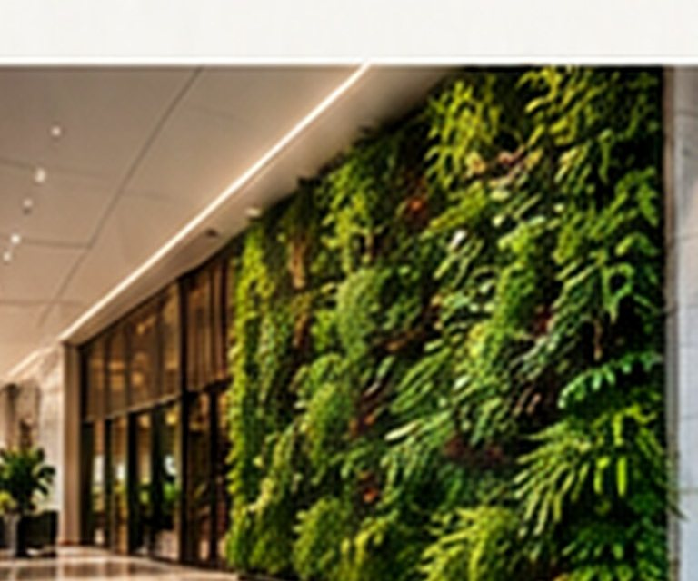

Corporate workplaces
Active offices, changing layouts and plant-care requirements that should not interrupt work.
A solution only works if it suits the building, the operating team and the budget attached to it.

We start with a site, not a catalogue. Light, access, intended use, maintenance responsibilities and total cost all influence what we recommend.
Rather than asking an office to own every plant and planter, rental offers a defined recurring arrangement for assets and horticulture care. We develop a suitable palette, organise installation and agree the responsibilities for routine visits, upkeep and replacements.
Best for occupied offices, managed workspaces, receptions and common areas.
Discuss a requirement ↗
A maintenance contract should describe the standard expected on site, not only the number of visits. We support routine care, plant-health observations, cleaning, pruning, site coordination and condition-led interventions within an agreed scope.
Best for workplaces, hospitality interiors, shared properties and established green spaces.
Discuss a requirement ↗
Outdoor planting has to survive the first photograph. Our work covers planting selection and supply, softscape execution, site coordination and practical consideration of water, soil, access and ongoing care.
Best for business parks, commercial developments and institutional settings.
Discuss a requirement ↗
Living walls sit between design, engineering and horticulture. We plan the planting and installation with maintenance access, irrigation interfaces, drainage and the condition of the feature after handover in view.
Best for commercial façades, office interiors, hospitality and feature spaces.
Discuss a requirement ↗
The most useful specialist partner understands the larger facilities contract. We can support bid scoping, site surveys, technical-commercial inputs, coordinated mobilisation and recurring delivery in ways that respect the IFM team’s client relationship.
Best for integrated bids, multi-location scopes and ongoing FM contracts.
Discuss a requirement ↗
Active offices, changing layouts and plant-care requirements that should not interrupt work.
Repeatable service standards with flexibility for different centres and floorplans.
Specialist horticulture that fits a larger operating and commercial relationship.
Landscape execution and ongoing care considered alongside property operations.
Guest-facing horticulture with thoughtful placement and discreet maintenance.
Durable planting choices, site coordination and practical long-term upkeep.
Share what you need, what exists today, and what success should look like.
Request a Proposal ↗